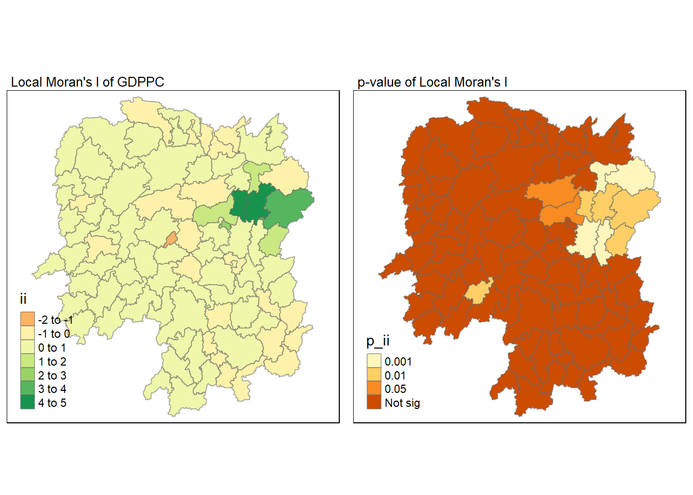

pacman::p_load(tmap, sf, tidyverse, sfdep, knitr, plotly)In-Class Exercise 2B: Global and Local Spatial Autocorrelations
Using sfdep package
1 Overview
For this task, we will be learning how to compute global and local spatial autocorrelations using the sfdep package.
2 Getting Started
We will first load the necessary packages using the following code chunk:
- tmap: for thematic mapping
- sf: for geospatial data handling (e.g. importing and exporting for spatial data and geoprocessing)
- tidyverse: a family of R packages for non-spatial data handling
- knitr: to generate static html tables
- sfdep: to calculate spatial weights and matrices, space time cube and hot spot analysis
- plotly: to make the graphs interactive
3 Preparing the Geospatial Data
3.1 Importing the data
hunan <- st_read(dsn = "data/geospatial", layer="Hunan")Reading layer `Hunan' from data source
`C:\sihuihui\ISSS624\In-class_Ex\In-class_Ex2\data\geospatial'
using driver `ESRI Shapefile'
Simple feature collection with 88 features and 7 fields
Geometry type: POLYGON
Dimension: XY
Bounding box: xmin: 108.7831 ymin: 24.6342 xmax: 114.2544 ymax: 30.12812
Geodetic CRS: WGS 84From the above outcome, we know that hunandata is simple feature (sf) data frame with 88 features (each representing 1 geographical entity), and each feature is a polygon.It uses the WGS84 projection.
4 Preparing the Aspatial Data
4.1 Importing the data
hunan2012 <- read.csv("data/aspatial/Hunan_2012.csv")5 Combining Both Data Frames Using Left Join
hunan_GDPPC<- left_join(hunan, hunan2012) %>%
select(1:4, 7, 15)When joining these 2 data frames, we did not specify the by= because there is a common column in both data frames (i.e., Country )
Other than joining both data frames, we also use select() to pick the relevant columns that we want. Note that the geometry column was retained even though it was not specified.
We typically use a left join with a spatial layer (e.g. hunan) and nonspatial layer (hunan_GDPPC) so that we can retain spatial geometric properties.
6 Plotting the Choropleth Map
We use the following code to visualise the choropleth map of Hunan’s 2012 GDPPC.
tmap_mode("plot")
tm_shape(hunan_GDPPC) +
tm_fill("GDPPC",
style = "quantile",
palette = "Blues",
title = "GDPPC") +
tm_borders(alpha = 0.5) +
tm_layout(main.title = "Distribution of GDP per capita by district in Hunan (2012)", main.title.position="center",
main.title.size=0.8,
legend.height = 0.45,
legend.width = 0.35,
frame= TRUE) +
tm_compass(type = "8star", size=2) +
tm_scale_bar() +
tm_grid(alpha = 0.2)
7 Global Measures of Spatial Association
7.1 Deriving Contiguity Weights (Queen’s Method)
The following code chunk derives the Queen’s method contiguity weights.
wm_q <- hunan_GDPPC %>%
mutate(nb = st_contiguity(geometry),
wt = st_weights(nb,
style = "W"),
.before = 1)
Explanation of the function(s) used above
- st_weights() provides 3 arguments:
- nb: a neighbour list object as creatd by st_neighbours()
- style: Default is “W” for row standardised weights. This value can also be “B”, “C”, “U”, “minmax”, and “S”. B is the basic binary coding, W is row standardised (sums over all links to n), C is globally standardised (sums over all links to n), U is equal to C divided by the number of neighbours (sums over all links to unity), while S is the variance-stabilizing coding scheme proposed by Tiefelsdorf et al. 1999, p. 167-168 (sums over all links to n).
- allow_zero: If TRUE, it assigns zero as lagged value to zone without neighbours.
Let us take a look at the data frame generated.
wm_qSimple feature collection with 88 features and 8 fields
Geometry type: POLYGON
Dimension: XY
Bounding box: xmin: 108.7831 ymin: 24.6342 xmax: 114.2544 ymax: 30.12812
Geodetic CRS: WGS 84
First 10 features:
nb
1 2, 3, 4, 57, 85
2 1, 57, 58, 78, 85
3 1, 4, 5, 85
4 1, 3, 5, 6
5 3, 4, 6, 85
6 4, 5, 69, 75, 85
7 67, 71, 74, 84
8 9, 46, 47, 56, 78, 80, 86
9 8, 66, 68, 78, 84, 86
10 16, 17, 19, 20, 22, 70, 72, 73
wt
1 0.2, 0.2, 0.2, 0.2, 0.2
2 0.2, 0.2, 0.2, 0.2, 0.2
3 0.25, 0.25, 0.25, 0.25
4 0.25, 0.25, 0.25, 0.25
5 0.25, 0.25, 0.25, 0.25
6 0.2, 0.2, 0.2, 0.2, 0.2
7 0.25, 0.25, 0.25, 0.25
8 0.1428571, 0.1428571, 0.1428571, 0.1428571, 0.1428571, 0.1428571, 0.1428571
9 0.1666667, 0.1666667, 0.1666667, 0.1666667, 0.1666667, 0.1666667
10 0.125, 0.125, 0.125, 0.125, 0.125, 0.125, 0.125, 0.125
NAME_2 ID_3 NAME_3 ENGTYPE_3 County GDPPC
1 Changde 21098 Anxiang County Anxiang 23667
2 Changde 21100 Hanshou County Hanshou 20981
3 Changde 21101 Jinshi County City Jinshi 34592
4 Changde 21102 Li County Li 24473
5 Changde 21103 Linli County Linli 25554
6 Changde 21104 Shimen County Shimen 27137
7 Changsha 21109 Liuyang County City Liuyang 63118
8 Changsha 21110 Ningxiang County Ningxiang 62202
9 Changsha 21111 Wangcheng County Wangcheng 70666
10 Chenzhou 21112 Anren County Anren 12761
geometry
1 POLYGON ((112.0625 29.75523...
2 POLYGON ((112.2288 29.11684...
3 POLYGON ((111.8927 29.6013,...
4 POLYGON ((111.3731 29.94649...
5 POLYGON ((111.6324 29.76288...
6 POLYGON ((110.8825 30.11675...
7 POLYGON ((113.9905 28.5682,...
8 POLYGON ((112.7181 28.38299...
9 POLYGON ((112.7914 28.52688...
10 POLYGON ((113.1757 26.82734...7.2 Computing Global Moran’s I
In the code chunk below, global_moran() function is used to compute the Moran’s I value. Different from spdep package, the output is a tibble data.frame.
moranI <- global_moran(wm_q$GDPPC,
wm_q$nb,
wm_q$wt)
glimpse(moranI)List of 2
$ I: num 0.301
$ K: num 7.647.3 Performing Global Moran’s I test
In general, Moran’s I test will be performed instead of just computing the Moran’s I statistics. With sfdep package, Moran’s I test can be performed by using global_moran_test() as shown in the code chunk below.
global_moran_test(wm_q$GDPPC,
wm_q$nb,
wm_q$wt)
Moran I test under randomisation
data: x
weights: listw
Moran I statistic standard deviate = 4.7351, p-value = 1.095e-06
alternative hypothesis: greater
sample estimates:
Moran I statistic Expectation Variance
0.300749970 -0.011494253 0.004348351
Note
- The default for
alternativeargument is “two.sided”. Other supported arguments are “greater” or “less”. - By default, the
randomizatonargument is TRUE. If FALSE, it assumes normality.
7.4 Performning Global Moran’s I permutation test
In practice, monte carlo simulation should be used to perform the statistical test. For sfdep, it is supported by globel_moran_perm().
Note
It is a good practice to use set.seed() before performing simulation. This is to ensure that the computation is reproducible.
set.seed(1234)
global_moran_perm(wm_q$GDPPC,
wm_q$nb,
wm_q$wt,
nsim=99)
Monte-Carlo simulation of Moran I
data: x
weights: listw
number of simulations + 1: 100
statistic = 0.30075, observed rank = 100, p-value < 2.2e-16
alternative hypothesis: two.sidedSince the p value is <2.2e-16, which is lower than the significance level of 0.05, we can reject the null hypothesis that the spatial patterns are random. Because the Moran’s I statistic is greater than 0, we can infer that the spatial distribution shows signs of clustering.
Note
The numbers of simulation is alway equal to nsim + 1. This mean in nsim = 99. This mean 100 simulation will be performed.
7.5 Computing Local Moran’s I
We can compute Local Moran’s I of GDPPC at county level using local_moran() of sfdep package.
lisa <- wm_q %>%
mutate(local_moran = local_moran(GDPPC, nb, wt, nsim = 99),
.before=1) %>%
unnest(local_moran)Let us take a look at the output.
lisaSimple feature collection with 88 features and 20 fields
Geometry type: POLYGON
Dimension: XY
Bounding box: xmin: 108.7831 ymin: 24.6342 xmax: 114.2544 ymax: 30.12812
Geodetic CRS: WGS 84
# A tibble: 88 × 21
ii eii var_ii z_ii p_ii p_ii_sim p_folded_sim skewness
<dbl> <dbl> <dbl> <dbl> <dbl> <dbl> <dbl> <dbl>
1 -0.00147 0.00177 0.000418 -0.158 0.874 0.82 0.41 -0.812
2 0.0259 0.00641 0.0105 0.190 0.849 0.96 0.48 -1.09
3 -0.0120 -0.0374 0.102 0.0796 0.937 0.76 0.38 0.824
4 0.00102 -0.0000349 0.00000437 0.506 0.613 0.64 0.32 1.04
5 0.0148 -0.00340 0.00165 0.449 0.654 0.5 0.25 1.64
6 -0.0388 -0.00339 0.00545 -0.480 0.631 0.82 0.41 0.614
7 3.37 -0.198 1.41 3.00 0.00266 0.08 0.04 1.46
8 1.56 -0.265 0.804 2.04 0.0417 0.08 0.04 0.459
9 4.42 0.0450 1.79 3.27 0.00108 0.02 0.01 0.746
10 -0.399 -0.0505 0.0859 -1.19 0.234 0.28 0.14 -0.685
# ℹ 78 more rows
# ℹ 13 more variables: kurtosis <dbl>, mean <fct>, median <fct>, pysal <fct>,
# nb <nb>, wt <list>, NAME_2 <chr>, ID_3 <int>, NAME_3 <chr>,
# ENGTYPE_3 <chr>, County <chr>, GDPPC <int>, geometry <POLYGON [°]>The output of local_moran() is an sf data.frame containing the columns ii, eii, var_ii, z_ii, p_ii, p_ii_sim, p_folded_sim, skewness and kurtosis.
ii: local moran statistic
eii: expectation of local moran statistic; for
localmoran_perm(), it refers to the permutation sample meansvar.ii:variance of local moran statistic; for
localmoran_perm(), it refers to the permutation sample standard deviationsz_ii: standard deviate of local moran statistic; for
localmoran_perm(), based on permutation sample means and standard deviationsp_ii:p-value of local moran statistic using
pnorm(); forlocalmoran_perm()using standardp_ii_sim: For
localmoran_perm(),rank()andpunif()of observed statistic rank for [0, 1] p-values usingalternative=p_folded_sim: the simulation folded [0, 0.5] range ranked p-value (based on this)
skewness: For
localmoran_perm(), the output ofe1071::skewness()for the permutation samples underlying the standard deviatesKurtosis: For
localmoran_perm(), the output ofe1071::kurtosis()for the permutation samples underlying the standard deviates
7.6 Visualising Local Moran’s I
We can use tmap package to prepare a choropleth map using the values in the ii field.
tmap_mode("plot")
tm_shape(lisa) +
tm_fill("ii") +
tm_borders(alpha = 0.5) +
tm_view(set.zoom.limits = c(6,8)) +
tm_layout(main.title = "Local Moran's I of GDPPC",
main.title.size = 0.8)
7.7 Visualising Local Moran’s p-values
We can use tmap package to prepare a choropleth map using the values in the p_ii field.
tmap_mode("plot")
tm_shape(lisa) +
tm_fill("p_ii", breaks = c(0, 0.001, 0.01, 0.05, 1),
labels = c("0.001", "0.01", "0.05", "Not sig")) +
tm_borders(alpha = 0.5) +
tm_layout(main.title = "p-value of Local Moran's I",
main.title.size = 0.8)
7.8 Visualising Local Moran’s I and p-values
For effective comparison, let us plot both maps next to each other.
tmap_mode("plot")
ii_val <- tm_shape(lisa) +
tm_fill("ii") +
tm_borders(alpha = 0.5) +
tm_view(set.zoom.limits = c(6,8)) +
tm_layout(main.title = "Local Moran's I of GDPPC",
main.title.size = 0.8)
pii_val <- tm_shape(lisa) +
tm_fill("p_ii", breaks = c(0, 0.001, 0.01, 0.05, 1),
labels = c("0.001", "0.01", "0.05", "Not sig")) +
tm_borders(alpha = 0.5) +
tm_layout(main.title = "p-value of Local Moran's I",
main.title.size = 0.8)
tmap_arrange(ii_val, pii_val, asp = 1, ncol = 2)
7.9 Visualising LISA Map
LISA map is a categorical map showing outliers and clusters. There are two types of outliers namely: High-Low and Low-High outliers. Likewise, there are two type of clusters namely: High-High and Low-Low cluaters. In fact, LISA map is an interpreted map by combining local Moran’s I of geographical areas and their respective p-values.
In lisa sf data.frame, we can find three fields contain the LISA categories. They are mean, median and pysal. In general, classification in mean will be used as shown in the code chunk below.
lisa_sig <- lisa %>%
filter(p_ii <0.05)
tmap_mode("plot")
tm_shape(lisa) +
tm_polygons() +
tm_borders(alpha = 0.5) +
tm_shape(lisa_sig) +
tm_fill("mean") +
tm_borders(alpha = 0.4)
8 Hot Spot and Cold Spot Area Analysis (HCSA)
HCSA uses spatial weights to identify locations of statistically significant hot spots and cold spots in an spatially weighted attribute that are in proximity to one another based on a calculated distance. The analysis groups features when similar high (hot) or low (cold) values are found in a cluster. The polygon features usually represent administration boundaries or a custom grid structure.
9 Computing local Gi* Statistics
First, we will compute an inverse distance weight matrix.
wm_idw <- hunan_GDPPC %>%
mutate(nb = st_contiguity(geometry),
wt = st_inverse_distance(nb, geometry,
scale = 1,
alpha = 1),
.before=1)We will then use local_gstar_perm() of sfdep package to compute local Gi* statistics using the following code chunk.
HCSA <- wm_idw %>%
mutate(local_Gi = local_gstar_perm(GDPPC, nb, wt, nsim=99),
.before = 1) %>%
unnest(local_Gi)Let us take a look at the output.
HCSASimple feature collection with 88 features and 16 fields
Geometry type: POLYGON
Dimension: XY
Bounding box: xmin: 108.7831 ymin: 24.6342 xmax: 114.2544 ymax: 30.12812
Geodetic CRS: WGS 84
# A tibble: 88 × 17
gi_star e_gi var_gi p_value p_sim p_folded_sim skewness kurtosis nb
<dbl> <dbl> <dbl> <dbl> <dbl> <dbl> <dbl> <dbl> <nb>
1 0.0416 0.0114 6.41e-6 0.0493 9.61e-1 0.7 0.35 0.875 <int>
2 -0.333 0.0106 3.84e-6 -0.0941 9.25e-1 1 0.5 0.661 <int>
3 0.281 0.0126 7.51e-6 -0.151 8.80e-1 0.9 0.45 0.640 <int>
4 0.411 0.0118 9.22e-6 0.264 7.92e-1 0.6 0.3 0.853 <int>
5 0.387 0.0115 9.56e-6 0.339 7.34e-1 0.62 0.31 1.07 <int>
6 -0.368 0.0118 5.91e-6 -0.583 5.60e-1 0.72 0.36 0.594 <int>
7 3.56 0.0151 7.31e-6 2.61 9.01e-3 0.06 0.03 1.09 <int>
8 2.52 0.0136 6.14e-6 1.49 1.35e-1 0.2 0.1 1.12 <int>
9 4.56 0.0144 5.84e-6 3.53 4.17e-4 0.04 0.02 1.23 <int>
10 1.16 0.0104 3.70e-6 1.82 6.86e-2 0.12 0.06 0.416 <int>
# ℹ 78 more rows
# ℹ 8 more variables: wt <list>, NAME_2 <chr>, ID_3 <int>, NAME_3 <chr>,
# ENGTYPE_3 <chr>, County <chr>, GDPPC <int>, geometry <POLYGON [°]>From the above results, we see that the following columns are generated due to local_gstar_perm() :
gi_star: the observed statistic
e_gi: the permutation sample mean
var_gi: the permutation sample variance
p_value: the p-value using sample mean and standard deviation
p_folded_sim: p-value based on the implementation of Pysal which always assumes a two-sided test taking the minimum possible p-value
skewness: sample skewness
kurtosis: sample kurtosis
9.1 Visualing Gi*
We use the following code chunk to visualise the Gi* computed.
tmap_mode("plot")
tm_shape(HCSA) +
tm_fill("gi_star") +
tm_borders(alpha = 0.5) +
tm_view(set.zoom.limits = c(6,8))
Visualising p-value of HCSA
We use the following code chunk to visualise the p-values of HCSA computed.
tmap_mode("plot")
tm_shape(HCSA) +
tm_fill("p_folded_sim") +
tm_borders(alpha = 0.5) +
tm_view(set.zoom.limits = c(6,8))For effective comparison, we plot both maps next to each other.
tmap_mode("plot")
map1 <- tm_shape(HCSA) +
tm_fill("gi_star") +
tm_borders(alpha = 0.5) +
tm_view(set.zoom.limits = c(6,8)) +
tm_layout(main.title = "Gi* of GDPPC",
main.title.size = 0.8)
map2 <- tm_shape(HCSA) +
tm_fill("p_value",
breaks = c(0, 0.001, 0.01, 0.05, 1),
labels = c("0.001", "0.01", "0.05", "Not sig")) +
tm_borders(alpha = 0.5) +
tm_layout(main.title = "p-value of Gi*",
main.title.size = 0.8)
tmap_arrange(map1, map2, ncol = 2)
9.2 Visualising Hot Spot and Cold Spot Areas
Now, we are ready to plot the significant (i.e. p-values less than 0.05) hot spot and cold spot areas by using the following code chunk.
HCSA_sig <- HCSA %>%
filter(p_folded_sim < 0.05)
tmap_mode("plot")
tm_shape(HCSA) +
tm_polygons() +
tm_borders(alpha = 0.5) +
tm_shape(HCSA_sig) +
tm_fill("gi_star") +
tm_borders(alpha = 0.4)